A random variable on
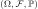
is a measurable map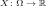
. One writes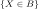
for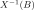
and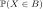
for its probability.
For a random variable  , the law
, the law
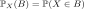
, defined for Borel , is a
probability measure on
, is a
probability measure on  .
.
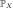
is defined because is measurable, and
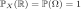
,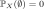
. If are disjoint Borel sets, their preimages are disjoint
events with union
are disjoint Borel sets, their preimages are disjoint
events with union 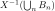
, so countable additivity of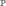
gives countable additivity of .
The distribution function of is
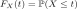
, .
.
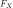
is non-decreasing, right-continuous, and satisfies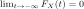
and . Moreover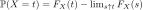
, so is continuous at exactly when
exactly when 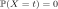
.Monotonicity:
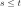
gives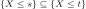
.Right-continuity: for the events
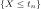
decrease to , so continuity from above of the measure gives ; since is monotone, convergence along one such sequence gives the one-sided limit.
The limits at  are continuity along
are continuity along
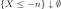
and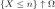
.For the jump, as
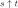
, so the left limit is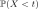
, and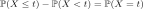
.Random variables
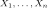
are independent if for all Borel sets ,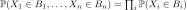
. An infinite family is independent if every finite subfamily is. A sequence is independent and identically distributed if it is independent and all its members have the same law.If are independent and
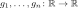
are Borel measurable, then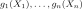
are independent.
For Borel sets  , the events
, the events
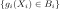
are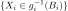
, and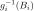
is Borel; apply the definition of independence to those sets.
Two random variables with the same law need not be equal, or even
defined on the same space, and every theorem below is insensitive to the
difference – which is why the underlying  can be left
unspecified. The converse question, whether the law is determined by
, is true and is not proved here: it requires the uniqueness of
measures agreeing on the intervals, which is Dynkin's lemma.
can be left
unspecified. The converse question, whether the law is determined by
, is true and is not proved here: it requires the uniqueness of
measures agreeing on the intervals, which is Dynkin's lemma.